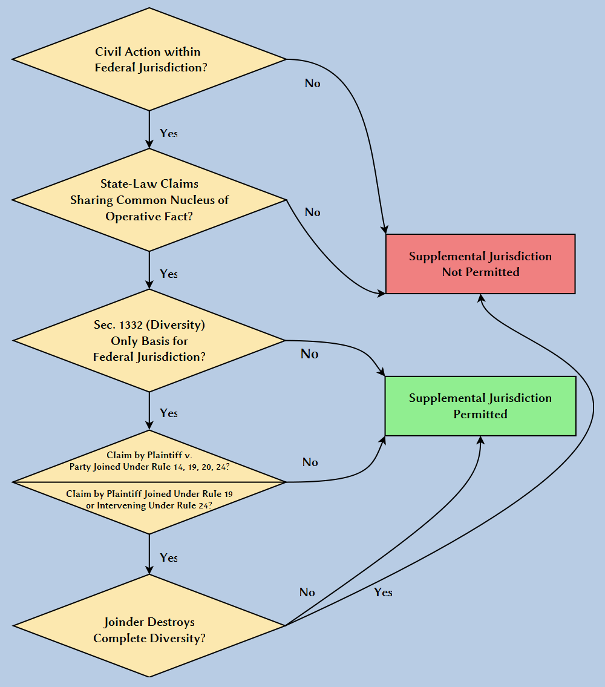

4 Subject Matter Jurisdiction
4.1 Federal Question Jurisdiction
U.S. Constitution, Article III
Section 2
The judicial power shall extend to all cases, in law and equity, arising under this Constitution, the laws of the United States, and treaties made, or which shall be made, under their authority;
28 U.S.C. § 1331
The district courts shall have original jurisdiction of all civil actions arising under the Constitution, laws, or treaties of the United States.
Louisville & Nashville R. Co. v. Mottley (U.S. 1908)
Statement by Justice Moody
The appellees (husband and wife), being residents and citizens of Kentucky, brought this suit in equity in the circuit court of the United States for the western district of Kentucky against the appellant, a railroad company and a citizen of the same state. The object of the suit was to compel the specific performance of the following contract:
Louisville, Ky., Oct. 2d, 1871.
The Louisville & Nashville Railroad Company, in consideration that E. L. Mottley and wife, Annie E. Mottley, have this day released company from all damages or claims for damages for injuries received by them on the 7th of September, 1871, in consequence of a collision of trains on the railroad of said company at Randolph’s Station, Jefferson County, Kentucky, hereby agrees to issue free passes on said railroad and branches now existing or to exist, to said E. L. & Annie E. Mottley for the remainder of the present year, and thereafter to renew said passes annually during the lives of said Mottley and wife or either of them.
The bill alleged that in September, 1871, plaintiffs, while passengers upon the defendant railroad, were injured by the defendant’s negligence, and released their respective claims for damages in consideration of the agreement for transportation during their lives, expressed in the contract. It is alleged that the contract was performed by the defendant up to January 1, 1907, when the defendant declined to renew the passes. The bill then alleges that the refusal to comply with the contract was based solely upon that part of the act of Congress of June 29, 1906, which forbids the giving of free passes or free transportation. The bill further alleges: First, that the act of Congress referred to does not prohibit the giving of passes under the circumstances of this case; and, second, that, if the law is to be construed as prohibiting such passes, it is in conflict with the 5th Amendment of the Constitution, because it deprives the plaintiffs of their property without due process of law. The defendant demurred to the bill. The judge of the circuit court overruled the demurrer, entered a decree for the relief prayed for, and the defendant appealed directly to this court.
Opinion
Two questions of law were brought here by appeal. They are, first, whether that part of the act of Congress of June 29, 1906, which forbids the giving of free passes or the collection of any different compensation for transportation of passengers than that specified in the tariff filed, makes it unlawful to perform a contract for transportation of persons, who in good faith, before the passage of the act, had accepted such contract in satisfaction of a valid cause of action against the railroad; and, second, whether the statute, if it should be construed to render such a contract unlawful, is in violation of the Fifth Amendment of the Constitution of the United States. We do not deem it necessary, however, to consider either of these questions, because, in our opinion, the court below was without jurisdiction of the cause. Neither party has questioned that jurisdiction, but it is the duty of this court to see to it that the jurisdiction of the Circuit Court, which is defined and limited by statute, is not exceeded. This duty we have frequently performed of our own motion.
There was no diversity of citizenship and it is not and cannot be suggested that there was any ground of jurisdiction, except that the case was a “suit arising under the Constitution and laws of the United States.” It is the settled interpretation of these words, as used in this statute, conferring jurisdiction, that a suit arises under the Constitution and laws of the United States only when the plaintiff’s statement of his own cause of action shows that it is based upon those laws or that Constitution. It is not enough that the plaintiff alleges some anticipated defense to his cause of action and asserts that the defense is invalidated by some provision of the Constitution of the United States. Although such allegations show that very likely, in the course of the litigation, a question under the Constitution would arise, they do not show that the suit, that is, the plaintiff’s original cause of action, arises under the Constitution. In Tennessee v. Union & Planters’ Bank, 152 U.S. 454, the plaintiff, the State of Tennessee, brought suit in the Circuit Court of the United States to recover from the defendant certain taxes alleged to be due under the laws of the State. The plaintiff alleged that the defendant claimed an immunity from the taxation by virtue of its charter, and that therefore the tax was void, because in violation of the provision of the Constitution of the United States, which forbids any State from passing a law impairing the obligation of contracts. The cause was held to be beyond the jurisdiction of the Circuit Court, the court saying, by Mr. Justice Gray, “a suggestion of one party, that the other will or may set up a claim under the Constitution or laws of the United States, does not make the suit one arising under that Constitution or those laws.”
The application of this rule to the case at bar is decisive against the jurisdiction of the Circuit Court.
Note: Postscript to Mottley
On remand, the Kentucky court held that the 1906 statute did not apply to the Mottleys’ free passes and ordered the railroad to continue honoring the settlement agreement. Louisville & Nashville R. Co. v. Mottley, 133 Ky. 652 (1909). The case made its way back to the U.S. Supreme Court, which once again ruled against the Mottleys. Holding that the 1906 statute rendered the agreement to provide free passes illegal, the Court reversed the order granting specific performance. Louisville & Nashville R. Co. v. Mottley, 219 US 467 (1911). That opinion did not entirely foreclose the possibility of some other remedy for the Mottleys:
Whether, without enforcing the contract in suit, the defendants in error may, by some form of proceeding against the railroad company, recover or restore the rights they had when the railroad collision occurred is a question not before us, and we express no opinion on it.
However, there is no record of anything further transpiring in the case.
Apart from the case for which he is remembered today, Erasmus Mottley was apparently “a prominent and influential business man” and unsuccessful candidate for public office. E. Polk Johnson (1912): 819-20.
Grable & Sons Metal Products, Inc. v. Darue Engineering & Mfg. (U.S. 2005)
Justice Souter delivered the opinion of the Court.
The question is whether want of a federal cause of action to try claims of title to land obtained at a federal tax sale precludes removal to federal court of a state action with nondiverse parties raising a disputed issue of federal title law. We answer no, and hold that the national interest in providing a federal forum for federal tax litigation is sufficiently substantial to support the exercise of federal-question jurisdiction over the disputed issue on removal, which would not distort any division of labor between the state and federal courts, provided or assumed by Congress.
I
In 1994, the Internal Revenue Service seized Michigan real property belonging to petitioner Grable & Sons Metal Products, Inc., to satisfy Grable’s federal tax delinquency. Title 26 U.S.C. §6335 required the IRS to give notice of the seizure, and there is no dispute that Grable received actual notice by certified mail before the IRS sold the property to respondent Darue Engineering & Manufacturing. Although Grable also received notice of the sale itself, it did not exercise its statutory right to redeem the property within 180 days of the sale, and after that period had passed, the Government gave Darue a quitclaim deed.
Five years later, Grable brought a quiet title action in state court, claiming that Darue’s record title was invalid because the IRS had failed to notify Grable of its seizure of the property in the exact manner required by §6335(a), which provides that written notice must be “given by the Secretary to the owner of the property or left at his usual place of abode or business.” Grable said that the statute required personal service, not service by certified mail.
Darue removed the case to Federal District Court as presenting a federal question, because the claim of title depended on the interpretation of the notice statute in the federal tax law. The District Court declined to remand the case at Grable’s behest after finding that the “claim does pose a significant question of federal law,” and ruling that Grable’s lack of a federal right of action to enforce its claim against Darue did not bar the exercise of federal jurisdiction. On the merits, the court granted summary judgment to Darue, holding that although §6335 by its terms required personal service, substantial compliance with the statute was enough.
The Court of Appeals for the Sixth Circuit affirmed. On the jurisdictional question, the panel thought it sufficed that the title claim raised an issue of federal law that had to be resolved, and implicated a substantial federal interest (in construing federal tax law). The court went on to affirm the District Court’s judgment on the merits. We granted certiorari on the jurisdictional question alone, to resolve a split within the Courts of Appeals on whether Merrell Dow Pharmaceuticals Inc. v. Thompson, 478 U. S. 804 (1986), always requires a federal cause of action as a condition for exercising federal-question jurisdiction. We now affirm.
II
Darue was entitled to remove the quiet title action if Grable could have brought it in federal district court originally, 28 U.S.C. §1441(a), as a civil action “arising under the Constitution, laws, or treaties of the United States,” §1331. This provision for federal-question jurisdiction is invoked by and large by plaintiffs pleading a cause of action created by federal law. There is, however, another longstanding, if less frequently encountered, variety of federal “arising under” jurisdiction, this Court having recognized for nearly 100 years that in certain cases federal-question jurisdiction will lie over state-law claims that implicate significant federal issues. The doctrine captures the commonsense notion that a federal court ought to be able to hear claims recognized under state law that nonetheless turn on substantial questions of federal law, and thus justify resort to the experience, solicitude, and hope of uniformity that a federal forum offers on federal issues.
The classic example is Smith v. Kansas City Title & Trust Co., 255 U.S. 180 (1921), a suit by a shareholder claiming that the defendant corporation could not lawfully buy certain bonds of the National Government because their issuance was unconstitutional. Although Missouri law provided the cause of action, the Court recognized federal-question jurisdiction because the principal issue in the case was the federal constitutionality of the bond issue. Smith thus held, in a somewhat generous statement of the scope of the doctrine, that a state-law claim could give rise to federal-question jurisdiction so long as it “appears from the complaint that the right to relief depends upon the construction or application of [federal law].”
The Smith statement has been subject to some trimming to fit earlier and later cases recognizing the vitality of the basic doctrine, but shying away from the expansive view that mere need to apply federal law in a state-law claim will suffice to open the “arising under” door. It has in fact become a constant refrain in such cases that federal jurisdiction demands not only a contested federal issue, but a substantial one, indicating a serious federal interest in claiming the advantages thought to be inherent in a federal forum.
But even when the state action discloses a contested and substantial federal question, the exercise of federal jurisdiction is subject to a possible veto. For the federal issue will ultimately qualify for a federal forum only if federal jurisdiction is consistent with congressional judgment about the sound division of labor between state and federal courts governing the application of §1331. Because arising-under jurisdiction to hear a state-law claim always raises the possibility of upsetting the state-federal line drawn (or at least assumed) by Congress, the presence of a disputed federal issue and the ostensible importance of a federal forum are never necessarily dispositive; there must always be an assessment of any disruptive portent in exercising federal jurisdiction.
These considerations have kept us from stating a “single, precise, all-embracing” test for jurisdiction over federal issues embedded in state-law claims between nondiverse parties. We have not kept them out simply because they appeared in state raiment, but neither have we treated “federal issue” as a password opening federal courts to any state action embracing a point of federal law. Instead, the question is, does a state-law claim necessarily raise a stated federal issue, actually disputed and substantial, which a federal forum may entertain without disturbing any congressionally approved balance of federal and state judicial responsibilities.
III
This case warrants federal jurisdiction. Grable’s state complaint must specify “the facts establishing the superiority of its claim,” and Grable has premised its superior title claim on a failure by the IRS to give it adequate notice, as defined by federal law. Whether Grable was given notice within the meaning of the federal statute is thus an essential element of its quiet title claim, and the meaning of the federal statute is actually in dispute; it appears to be the only legal or factual issue contested in the case. The meaning of the federal tax provision is an important issue of federal law that sensibly belongs in a federal court. The Government has a strong interest in the “prompt and certain collection of delinquent taxes,” and the ability of the IRS to satisfy its claims from the property of delinquents requires clear terms of notice to allow buyers like Darue to satisfy themselves that the Service has touched the bases necessary for good title. The Government thus has a direct interest in the availability of a federal forum to vindicate its own administrative action, and buyers (as well as tax delinquents) may find it valuable to come before judges used to federal tax matters. Finally, because it will be the rare state title case that raises a contested matter of federal law, federal jurisdiction to resolve genuine disagreement over federal tax title provisions will portend only a microscopic effect on the federal-state division of labor.
Merrell Dow Pharmaceuticals Inc. v. Thompson, 478 U. S. 804 (1986), on which Grable rests its position, is not to the contrary. Merrell Dow considered a state tort claim resting in part on the allegation that the defendant drug company had violated a federal misbranding prohibition, and was thus presumptively negligent under Ohio law. The Court assumed that federal law would have to be applied to resolve the claim, but after closely examining the strength of the federal interest at stake and the implications of opening the federal forum, held federal jurisdiction unavailable. Congress had not provided a private federal cause of action for violation of the federal branding requirement, and the Court found “it would flout, or at least undermine, congressional intent to conclude that federal courts might nevertheless exercise federal-question jurisdiction and provide remedies for violations of that federal statute solely because the violation is said to be a ‘proximate cause’ under state law.”
Because federal law provides for no quiet title action that could be brought against Darue, Grable argues that there can be no federal jurisdiction here, stressing some broad language in Merrell Dow that on its face supports Grable’s position. But an opinion is to be read as a whole, and Merrell Dow cannot be read whole as overturning decades of precedent, as it would have done by effectively adopting the Holmes dissent in Smith, and converting a federal cause of action from a sufficient condition for federal-question jurisdiction into a necessary one.
Accordingly, Merrell Dow should be read in its entirety as treating the absence of a federal private right of action as evidence relevant to, but not dispositive of, the “sensitive judgments about congressional intent” that §1331 requires. The absence of any federal cause of action affected Merrell Dow’s result two ways. The Court saw the fact as worth some consideration in the assessment of substantiality. But its primary importance emerged when the Court treated the combination of no federal cause of action and no preemption of state remedies for misbranding as an important clue to Congress’s conception of the scope of jurisdiction to be exercised under §1331. The Court saw the missing cause of action not as a missing federal door key, always required, but as a missing welcome mat, required in the circumstances, when exercising federal jurisdiction over a state misbranding action would have attracted a horde of original filings and removal cases raising other state claims with embedded federal issues. For if the federal labeling standard without a federal cause of action could get a state claim into federal court, so could any other federal standard without a federal cause of action. And that would have meant a tremendous number of cases.
As already indicated, however, a comparable analysis yields a different jurisdictional conclusion in this case. Although Congress also indicated ambivalence in this case by providing no private right of action to Grable, it is the rare state quiet title action that involves contested issues of federal law. Consequently, jurisdiction over actions like Grable’s would not materially affect, or threaten to affect, the normal currents of litigation. Given the absence of threatening structural consequences and the clear interest the Government, its buyers, and its delinquents have in the availability of a federal forum, there is no good reason to shirk from federal jurisdiction over the dispositive and contested federal issue at the heart of the state-law title claim.
Note: Understanding Grable
In Grable, the Supreme Court sought to clarify when a state-law claim with an “essential federal element” falls within the jurisdiction granted under §1331. This is not really an exception to the “well-pleaded complaint” rule in Mottley. Under the Grable standard, the federal question must still arises on the face of the complaint, i.e. as one of the elements of the plaintiff’s claim, not a defense.
But the Grable standard is an exception to the Holmes “creation test”. Even though state law creates the plaintiff’s cause of action (which, for Holmes, would mean the claim did not “arise under” federal law), the presence of a federal issue as an element of the claim may nonetheless confer federal jurisdiction under §1331.
Rule
A state-law claim raises a federal question, sufficient to confer jurisdiction under §1331, where,
- An issue of federal law forms an essential part of plaintiff’s claim (not a defense),
- The federal issue is actually disputed, and
- There is a substantial federal interest at stake.
Essential Federal Issue
The federal issue is “essential” where the plaintiff’s “right to relief depends upon the construction or application of the Constitution or laws of the United States.” Smith v. Kansas City Title & Trust Co. (US 1921). This requirement will generally be satisfied where the plaintiff relies on federal law to establish a right, interest, or duty at issue in the case.
Federal Issue Is Actually Disputed
If there is no dispute between the parties over the federal issue as it arises in the case, there is no need for the court to resolve the issue and thus no reason to confer federal subject matter jurisdiction based on that issue.
Substantial Federal Interest
In assessing whether there is a “substantial federal interest”, the Supreme Court has considered these factors:
- Whether uniform interpretation and application of federal law is important for fulfilling federal policy
- Whether allowing a federal forum for private litigants would undermine a federal statutory enforcement scheme
- Whether providing a federal forum would upset the balance between the state and federal judicial systems
Illustrations
Federal Issue
Essential: Grable: Grable brought a state-law “quiet title” claim against Darue, which purchased property that the IRS had seized from Grable in satisfaction of a tax delinquency.
- • Under state law, Grable was required to specify “the facts establishing the superiority of its claim” to the property.
Under the federal statute governing the sale of property to satisfy tax delinquencies, the IRS was supposed to give Grable written notice of the seizure. The IRS sent Grable notice of the seizure by certified mail, but Grable contended that the statute required personal service of the notice. - • Grable argued that failure to satisfy the federal statutory notice requirement rendered the sale of the property to Darue invalid. - • Darue argued that, since Grable received actual notice of the seizure and sale, but failed to exercise its statutory right to redeem the property within 180 days of the sale, Darue’s purchase of the property was valid.
Grable’s right to relief thus depended on the construction and applicability of federal law (i.e. whether service of the IRS notice by certified mail satisfied the federal statute the lack of notice in the form specified by federal law rendered the sale of the property void). And this issue was actually in dispute between the parties.
The real focus of the suit was Grable’s right under federal law not to have its property seized by the IRS without proper notice. Grable was merely using a state-law quiet title action as the means to vindicate that right (because federal law itself didn’t provide a remedy).
Not Essential: Merrell Dow: The plaintiffs brought state law negligence and other tort claims against Merrell Dow for birth defects allegedly resulting from a drug manufactured and marketed by Merrell Dow.
- • The plaintiffs alleged that Merrell Dow’s failure to warn about potential birth defects was negligent.
Under state tort law, one way a plaintiff could satisfy the negligence element was by showing that the defendant failed to comply with an applicable state or federal legal standard. - • The plaintiffs relied on federal law for this purpose, asserting that FDA regulations required a warning about potential birth defects.
The plaintiffs were not asserting rights under federal law. They were simply using the FDA regulations as evidence of what a reasonable drug manufacturer would do, to establish negligence under state law.
Not Essential: Gunn v. Minton: Minton sued Gunn under state law for attorney malpractice. The malpractice claim was based on a previous suit in which Gunn had represented Minton as the plaintiff in a patent infringement suit (governed by federal law).
Under state law, Minton was required to allege (and prove) that Gunn’s representation in the underlying suit was negligent, and that Gunn would have prevailed in that suit but for Gunn’s negligence.
• Minton alleged that Gunn failed to raise a certain argument in the patent infringement suit, that a competent lawyer would have raised the argument, and that Minton would have won if Gunn had raised the argument.
• To decide whether the argument would have been successful, the court would have to apply federal patent law.
As in Merrell Dow, the suit wasn’t really about Minton’s rights under federal law.
- • The patent law issue arose only as a benchmark for establishing whether Gunn suffered an injury as a result of negligent legal representation.
Federal Interest
Substantial: Grable: There is a strong federal interest in uniform interpretation of the statutory requirements for seizures of taxpayer property by the IRS. Inconsistent interpretations by various state courts would subject the IRS to conflicting standards in carrying out its tax enforcement responsibilities, and promote uncertainty about the rights and interests of taxpayers and purchasers of seized property.
The absence of a private right of action to enforce the statutory notice requirements in IRS tax seizures does not weigh against the exercise of federal jurisdiction over state-law quiet title claims based on alleged violations of the federal statutory requirements.
• The federal statute provides no special enforcement mechanism for those requirements, so private suits aren’t interfering with anything.
• But the federal statute gives individual taxpayers private rights, so it makes sense for federal courts to adjudicate claims that depend on whether those rights were violated.
Only rarely will a state-law quiet title claim depend on an issue of federal law, so there is little risk of opening the floodgates to claims that properly belong in state court. The strong federal interest at stake justifies opening the federal courts to the relatively limited set of cases in which the issue arises.
Not Substantial: Merrell Dow: While there is a federal interest in uniform interpretation of drug labeling requirements under the Federal Food, Drug, and Cosmetic Act (FDCA), that interest would not be impaired by conflicting state court interpretations in the context of state-law product liability claims.
- • Decisions in those cases would not affect any rights, interests, or duties under the FDCA itself.
The FDCA has its own mechanism for promoting uniform interpretation and application, through exclusive enforcement by the FDA.
- • A state court determination in the negligence suit would not be binding in an enforcement action by the FDA.
The FDCA provides for exclusive enforcement by the FDA, and there is no private right of action under the statute.
• The statutory enforcement scheme evidences a Congressional intent that the federal courts not adjudicate private suits arising under the FDCA.
• Allowing plaintiffs to litigate FDCA non-compliance under the guise of state-law tort claims would undermine this statutory scheme.
The plaintiffs in these cases asserted routine state-law claims, in which the federal issues were merely incidental to establishing the defendants’ liability under state law.
• State law commonly allows plaintiffs to use federal legal standards as a baseline for establish the standard of care under state tort law.
• If every such case were regarded as arising under federal law for purposes of jurisdiction under §1331, this would effectively “federalize” much routine tort law, subjecting the federal courts to a flood of cases that raise no substantial federal interest, and interfering with the role of state courts as the primary forum for raising state-law claims.
Not Substantial: Gunn v. Minton: While there is a federal interest in uniform interpretation of federal patent law, that interest would not be impaired by conflicting state court interpretations in the context of state-law attorney malpractice claims.
• State court interpretations of federal patent law in the context of attorney malpractice claims do not actually affect any rights or interests under federal patent law.
• The federal issues arise only as counterfactual hypotheticals: what would have happened if the attorney had done something different?
Uniform interpretation and application of federal patent law, in cases where rights under that law are actually at stake, is ensured by exclusive federal jurisdiction over patent claims (i.e. state courts may not hear those claims at all).
- • Parties asserting rights under federal patent law have a private right of action in federal court.
Malpractice claims based on an attorney’s conduct in a federal patent suit don’t really affect the rights or interests governed by federal patent law.
• Minton’s patent remains invalid, regardless of what happens in the malpractice case
• Allowing state courts to decide malpractice claims arising from patent suits won’t interfere with the exclusive federal jurisdiction over patent claims themselves.
4.2 Diversity Jurisdiction
U.S. Constitution, Article III
Section 2
The judicial power shall extend to all cases;–between citizens of different states; and between a state, or the citizens thereof, and foreign states, citizens or subjects.
28 U.S.C. § 1332
(a) The district courts shall have original jurisdiction of all civil actions where the matter in controversy exceeds the sum or value of $75,000, exclusive of interest and costs, and is between—
(1) citizens of different States;
(2) citizens of a State and citizens or subjects of a foreign state, except that the district courts shall not have original jurisdiction under this subsection of an action between citizens of a State and citizens or subjects of a foreign state who are lawfully admitted for permanent residence in the United States and are domiciled in the same State;
(3) citizens of different States and in which citizens or subjects of a foreign state are additional parties; and
(4) a foreign state, defined in section 1603(a) of this title, as plaintiff and citizens of a State or of different States.
(c) For the purposes of this section and section 1441 of this title—
(1) a corporation shall be deemed to be a citizen of every State and foreign state by which it has been incorporated and of the State or foreign state where it has its principal place of business,
(2) the legal representative of the estate of a decedent shall be deemed to be a citizen only of the same State as the decedent, and the legal representative of an infant or incompetent shall be deemed to be a citizen only of the same State as the infant or incompetent.
(e) The word “States”, as used in this section, includes the Territories, the District of Columbia, and the Commonwealth of Puerto Rico.
Hanks v Coan (M.D.N.C. 1999)
This matter comes before the court on Defendant Frances Coan’s motion to dismiss Plaintiff’s complaint and Defendant John Coan, III’s, motion to dismiss, pursuant to Fed.R.Civ.P. 12(b)(1), for lack of subject matter jurisdiction. For the reasons discussed herein, the court will grant Defendants’ motions to dismiss.
Plaintiff filed this action asserting claims arising out of the same transactions and occurrences that are the subject matter of the companion case, Coan v. Hanks. Defendant Frances Coan (F. Coan) and Defendant John Coan, III, (J. Coan) independently filed motions to dismiss the complaint, pursuant to Fed.R.Civ.P. 12(b)(1), on the ground that complete diversity of citizenship does not exist. On April 26, 1999, the court held a hearing solely on the diversity jurisdiction issue. The two motions to dismiss are the matters now pending before the court.
It has long been held that federal courts are courts of limited jurisdiction and can only entertain actions over which they possess subject matter jurisdiction. The parties agree that Plaintiff’s basis for jurisdiction in this federal court is diversity of citizenship pursuant to 28 U.S.C. §1332. The parties dispute, however, whether there is complete diversity among the parties such that subject matter jurisdiction exists in this forum.
Plaintiff asserts that since she is a citizen of Utah and Defendants are citizens of North Carolina, complete diversity exists among the parties. Defendants contend that both Plaintiff and Defendants are citizens of North Carolina. Giving due regard to the fact that the “jurisdiction [of federal courts] will not be presumed,” the court turns to the law with regard to diversity jurisdiction.
For purposes of establishing diversity jurisdiction, “a natural person’s citizenship is determined by domicile. Although a person may have more than one residence, she may have only one domicile at any one time.”
Moreover, the court recognizes that “an individual acquires a ‘domicile of origin’ at birth, which continues until a new one is acquired.” There is a presumption that a person “retains the domicile with which he was born unless it can be shown that he has established a new domicile.”
When a person’s domicile is in dispute, the court must consider the following two factors in determining a person’s domicile: “(1) the party’s physical presence in the state; (2) the intent to remain in that state indefinitely.” In addition, it is the party asserting federal court jurisdiction, which in this case is the plaintiff, who shoulders the burden of proving by a preponderance of the evidence that diversity exists.
It is well settled that the court has broad discretion to determine the manner in which the jurisdictional issue may be decided. Therefore, in ruling on the jurisdictional issue, the court may base its decision on the pleadings and affidavits, or the court may conduct an evidentiary hearing.
Having reviewed the briefs, and the testimony, and arguments made at the evidentiary hearing, the court finds that Plaintiff’s domicile remains her domicile of origin, which is North Carolina. At the time the lawsuit was filed, Plaintiff was physically present in the state of North Carolina and had been since May 1997. During this time, Plaintiff had no physical presence in Utah and has not returned to Utah since she left in 1997. Plaintiff maintains that ownership of a mobile home located in Utah indicates both a physical presence in Utah and an intent to return there. The court, however, finds this argument unpersuasive. Under certain circumstances, a mobile home qualifies as real property. In the present action, the mobile home is vacant and is merely being stored in Utah. Absent occupancy and use as a residence, the mobile home constitutes personal property. Mere presence of personal property in a state does not establish either physical presence in a state or an intent to remain indefinitely.
In addition, the fact that Plaintiff has applied for and has been admitted to a doctoral program at LaSalle University in no way suggests an intent to be domiciled in Utah. In the first place, Plaintiff admits that she has never been to LaSalle University. Moreover, all of the courses with LaSalle are completed via correspondence.
Furthermore, the case law makes it clear that in determining domicile for purposes of establishing diversity jurisdiction, courts are to look at the totality of the circumstances. In addition, courts generally consider the following list of factors to be relevant and instructive in ruling on this jurisdictional issue and ascertaining a party’s intent to remain in that state indefinitely:
current residence, voting registration and voting practices, location of personal and real property; location of brokerage and bank accounts; memberships in unions, fraternal organizations, churches, clubs, and other associations; place of employment or business; driver’s license and automobile registration; payment of taxes, as well as several others.
Courts faced with the identical jurisdictional issue have also considered “the location of a person’s physician, lawyer, accountant, dentist, stockbroker, etc.” While the court recognizes that a person’s own statement of intent with respect to acquiring or retaining a domicile may be relevant, it “is not conclusive and is to be accepted with considerable reserve.”
In the instant action, Plaintiff was born and reared in North Carolina. Plaintiff attended Wake Forest University and the University of North Carolina at Chapel Hill. For the past year, Plaintiff has resided at 135 East Devonshire Street, Winston–Salem, North Carolina. Plaintiff also alleges that she owns the contents of the East Devonshire Street residence and Plaintiff has petitioned the court for injunctive relief permitting her to continue to reside there. The court finds that these actions standing alone indicate that Plaintiff’s residence is located in North Carolina and that Plaintiff intends to remain in North Carolina.
Other factors clearly demonstrate that Plaintiff is a citizen of North Carolina. It is undisputed that Plaintiff owns an interest in several pieces of real property in North Carolina. Plaintiff manages rental properties in North Carolina. In fact, Plaintiff contends that her management of these rental properties “has caused her to forsake all other business activities .” Plaintiff also holds personal bank accounts in North Carolina. In addition, Plaintiff’s physicians are in North Carolina.1 Although Plaintiff has left North Carolina for periods of time,2 she has always returned to Winston–Salem. Moreover, it is well settled that “domicile is not destroyed by mere absence from the domicile state.”
1 (n.4 in opinion) Plaintiff suffers from a variety of serious medical conditions which necessitate treatment by several specialists located in North Carolina.
2 (n.5 in opinion) The record indicates that Plaintiff has resided in Georgia, California, and Utah, among other places.
The court also finds the case of Webb v. Nolan to be analogous to the present case. While the court recognizes that it is not binding precedent, the court nevertheless affords the Webb decision substantial weight. In Webb, the court held that the plaintiff was a citizen of North Carolina and not California for purposes of determining if diversity of citizenship existed between the parties. The court made the following findings of fact:
Plaintiff has regularly returned to North Carolina during the vacations and holidays from her teaching job in California. For years she considered a Winston–Salem physician her regular or family doctor. The plaintiff admits that she was not employed in California on the date this action was instituted and that she owns personal property in California and it is in storage there.
The court also found that “the fact that she was registered to vote in California (though she has not exercised her franchise there since returning to North Carolina in July 1971) and is not registered to vote in North Carolina is immaterial under the circumstances.”
Applying the facts of the present case to the controlling principles of law, the court finds that Plaintiff was domiciled in North Carolina both at the time the lawsuit was instituted and at the time Defendant removed the case to this court.
Therefore, absent complete diversity of citizenship between Plaintiff and Defendants, the court is without jurisdiction and must dismiss the case.
Note: Citizenship of Organizational Parties
Under the diversity jurisdiction statute, a corporation is a citizen of both the state or country in which it is incorporated and the state or country where it has its principal place of business. 28 U.S.C. §1332(c)(1). In Hertz Corp. v. Friend, 559 US 77 (2010), the Supreme Court held that a corporation’s “principal place of business” is “the place where the corporation’s high level officers direct, control, and coordinate the corporation’s activities.” Under this “nerve center” test, the principal place of business “will typically be found at a corporation’s headquarters.”
For unincorporated associations (e.g. a business partnership, labor union, or other organization formed for some common purpose), the traditional rule is that “an unincorporated association’s citizenship is that of each of its members.” United Steelworkers of America v. R.H. Bouligny, Inc. 382 U.S. 145 (1965); Carden v. Arkoma Associates, 494 U.S. 185 (1990). But in cases under the “Class Action Fairness Act”, an unincorporated association is treated like a corporation, as a citizen of both the state under whose law it is organized and the state of its principal place of business. 28 U.S.C. §1332(d)(10).
Ottawa Township Board of Trustees v. New Par (I) (N.D. Ohio 2017)
This state-law declaratory-judgment action tests whether the construction of a new cell tower must comply with an Ohio township’s zoning regulations.
Ohio law generally forbids townships to regulate cellular communications towers and other public utilities within their jurisdictions. But a township’s board of trustees may regulate the location and construction of a cell tower if: 1) either a trustee or a person who owns property neighboring the cell-tower site objects; and 2) the township notifies the person building the tower that it will subject the tower to its zoning regulations.
In 2015, defendant STC Towers, LLC, notified the Board of Trustees of Ottawa Township, Ohio, of its intent to construct a cell tower in one of the Township’s residential districts. (Upon completion of construction, STC will lease the tower to defendant New Par, d/b/a Verizon Wireless.).
The Trustees objected to the proposed construction and so notified STC in writing, but STC proceeded with construction.
STC took the position that the Trustees’ written objection was invalid under Ohio law. That provision requires that “the fiscal officer of the township send the person proposing to construct the tower written notice that the tower is subject to” the Township’s zoning code. Because the Trustees themselves—rather than the Township’s fiscal officer—had issued the notice, STC asserted that the Trustees had no power to regulate the placement or construction of the tower.
In January, 2017, the Trustees sued New Par in the Putnam County, Ohio, Court of Common Pleas. Their complaint sought an order requiring that New Par “comply with the Ottawa Township Zoning Resolution” and precluding defendants “from continuing the construction” of the cell tower.
Rather than answer the complaint or file a responsive pleading, New Par removed the case to this court on the basis of diversity jurisdiction.
After I granted New Par’s motion to join STC as a necessary party, the defendants counterclaimed against the Trustees. They alleged that the Trustees’ attempt to regulate the construction of the cell tower: 1) is ultra vires as a matter of Ohio law; 2) violates the Telecommunications Act of 1996; and 3) tortiously interferes with their business. New Par and STC seek money damages and a declaratory judgment that the Trustees have no power under Ohio law to regulate the cell tower.
Pending is the Trustees’ motion to remand the case to state court.
They contend that the case does not satisfy the amount-in-controversy requirement because their complaint seeks no monetary damages, only declaratory relief. The Trustees also argue that I may not consider the damages that defendants seek by way of counterclaim (allegedly in excess of $250,000) when determining the amount in controversy.
For the reasons that follow, I agree that the defendants’ counterclaim damages do not count toward the amount-in-controversy requirement. But the record is currently insufficient to determine whether the value of the declaratory relief that the Trustees seek exceeds $75,000. Accordingly, I will hold the remainder of the motion in abeyance pending further submissions from the parties.
Discussion
“Any civil action brought in a State court of which the district courts of the United States have original jurisdiction, may be removed by the defendant or the defendants, to the district court of the United States for the district and division embracing the place where such action is pending.” 28 U.S.C. §1441(a).
District courts have original jurisdiction over civil cases between citizens of different states where the amount in controversy, exclusive of costs and interest, exceeds $75,000. 28 U.S.C. §1332(a)(1).
In cases that a defendant has removed from state court, “the existence of subject matter jurisdiction is determined by examining the complaint as it existed at the time of removal.” “The burden of showing that the district court has original jurisdiction is on the party seeking removal.”
Neither the United States Supreme Court nor the United States Court of Appeals for the Sixth Circuit has decided whether a defendant’s counterclaim damages count toward the amount-in-controversy requirement.
As some district courts have noted, however, the Sixth Circuit has “referred approvingly to the traditional rule that ‘no part of the required jurisdictional amount can be met by considering a defendant’s counterclaim to satisfy the amount in controversy requirement for removal jurisdiction purposes.’”
Ultimately, the Circuit decided the Sanford case on the ground that the plaintiffs admitted that the amount in controversy exceeded $75,000, so its endorsement in dicta of the “traditional rule” is just one piece of persuasive authority to weigh, rather than binding authority to follow.
At the district-court level, “the majority of Sixth Circuit district courts to confront the question have held that counterclaims should not be considered when determining the amount in controversy for purposes of removal jurisdiction.”
These cases make three points that persuade me that I ought not consider the defendants’ counterclaim damages in deciding the amount in controversy.
First, because removal jurisdiction is a creature of statute rather than based in the Constitution, courts construe removal jurisdiction narrowly. Such construction is necessary, in particular, to avoid impinging on the right of the State courts to adjudicate cases within their jurisdictions. By excluding counterclaim damages, the class of removable cases remains smaller.
Second, this approach is consistent with the rule that a defendant cannot remove a case to federal court on the basis of a defense or counterclaim that arises under federal law.
Third, it also comports “with the well-pleaded-complaint rule, which provides that federal jurisdiction exists only when a federal question is presented on the face of the plaintiff’s properly pleaded complaint. The competing approach of not requiring the jurisdictional amount to be met in the complaint flies in the face of the rule.”
I therefore hold that a defendants’ counterclaim damages cannot satisfy the amount-in-controversy requirement. But even assuming that counterclaim damages could count toward the amount in controversy, I would not be able to consider STC and New Par’s damages in any event.
As already noted, courts determine the existence of jurisdiction at the time of removal.
Here, STC and New Par did not file their counterclaim until after they removed the case to federal court. Accordingly, “considering the damages sought by the counterclaim would violate the rule that whether an action could have been brought in federal court originally is determined by the amount in controversy at the time of removal.”
For these reasons, defendants’ counterclaim damages cannot and do not satisfy the amount-in-controversy requirement.
“In actions seeking declaratory or injunctive relief, it is well established that the amount in controversy is measured by the value of the object of the litigation.” “Where a party seeks a declaratory judgment, the amount in controversy is not necessarily the money judgment sought or recovered, but rather the value of the consequences which may result from the litigation.”
The Trustees contend that their complaint “does not put any amount in controversy” because it “does not seek monetary damages.” That argument doesn’t hold much water.
In their reply brief, the Trustees contend that “the object of the litigation is to require compliance with Ottawa Township’s Zoning Resolution—a procedure which should not cost the Defendants anywhere near $75,000.” But the Trustees provide no explanation—let alone evidence—to support their position that the cost of complying with the proposed declaratory judgment is $75,000 or less.
The defendants contend that “the construction of the wireless telecommunications facility itself is valued in excess of $250,000 and the damages that will be or have been incurred by the Defendants as a result of the Plaintiff’s conduct go upwards from there.”
This contention, which is both conclusory and non-responsive, likewise does not establish whether the amount in controversy exceeds $75,000.
A defendant that removes a case to federal court ordinarily “need include only a plausible allegation that the amount in controversy exceeds the jurisdictional threshold,” but such an allegation will not suffice if “questioned by the court.”
“When the amount in controversy is questioned, the defendant must provide evidence to support its allegation that the lawsuit involves an amount in controversy meeting the jurisdictional threshold.” The defendant must prove, by a preponderance of the evidence, that the case satisfies the amount-in-controversy requirement.
I question the defendants’ allegation, principally because it identifies only the value of their construction project, rather than the cost of making that project comply with the Township zoning code.
The Trustees seek a declaratory judgment that the defendants must construct the cell tower in compliance with the Township’s zoning code. Accordingly, the “value of the object of litigation” would seem to be the costs that the defendants will incur to comply with that code—whether in the form of additional expenses to retrofit whatever portion of the tower is currently complete or to redesign the tower from scratch, the loss in value, if any, of a tower that must comply with the Township’s regulations when compared to a tower that does not so comply, the sunk costs if the tower project cannot go forward, and the like.
Because the record is silent on these issues, the parties must submit additional briefs and supporting evidence so that I can determine whether this court has subject-matter jurisdiction.
Ottawa Township Board of Trustees v. New Par (II) (N.D. Ohio 2017)
This is a state-law declaratory-judgment case.
The defendants, New Par (d/b/a Verizon Wireless) and STC Towers, LLC, intend to build, or are in the process of building, a cellular communications tower in a residential district of Ottawa Township, Putnam County, Ohio.
Because the Township’s zoning code forbids erection of cell towers in residentially zoned districts, the Ottawa Township Board of Trustees sued defendants in the Common Pleas Court of Putnam County, seeking an injunction that would require them to comply with the Township’s zoning code and bar them “from continuing the construction” of the tower.
After defendants removed the suit to this court, the Trustees moved to remand, arguing that the case did not satisfy the amount in controversy requirement. They argued, first, that the case did not put any amount in controversy because their complaint sought only equitable relief. Second, the Trustees argued that I could not count the damages defendants sought by way of counterclaim when calculating the amount in controversy.
In a prior order, I agreed with the Trustees that the counterclaim damages could not satisfy the amount in controversy requirement.
But I disagreed that, simply because the Trustees sought declaratory and/or injunctive relief, there was no amount in controversy. Rather, and in accordance with Sixth Circuit precedent, I held that “‘the amount in controversy is measured by the value of the object of the litigation.’”
In my view, the object of the litigation:
seemed to be the costs that the defendants will incur to comply with the code, whether in the form of additional expenses to retrofit whatever portion of the tower is currently complete or to redesign the tower from scratch, the loss in value, if any, of a tower that must comply with the Township’s regulations when compared to a tower that does not so comply, the sunk costs if the tower project cannot go forward, and the like.
Because the parties had not addressed the question, I ordered supplemental briefing.
In its supplemental filing, STC Towers argues that, if the Trustees were to succeed in this litigation, they “would be able to completely shut down the Defendants’ project.” In that case, STC Towers stands to lose the more than $312,000 it has already spent: nearly $83,000 in costs for “surveys, permits, site acquisition services and the like,” and nearly $230,000 in costs for “land acquisition, the tower itself and construction.”
Also at risk, according to STC Towers, is the anticipated revenue stream from operating the facility on behalf of New Par/Verizon. This amounts to $260,000 over a ten-year period.
In their supplemental filing, the Trustees do not dispute these figures.
Rather, they contend that “STC’s argument regarding the amount in controversy is essentially a restatement of the claim for damages in its counterclaim—it argues that the Defendants would be injured by not being allowed to proceed with a project they took the risk of starting without having complied with zoning requirements.” The Trustees go on to argue that my prior order forbids reliance on those damages to establish subject matter jurisdiction.
As the Sixth Circuit has explained, “the costs of complying with an injunction, whether sought by one plaintiff or many plaintiffs, may establish the amount in controversy.” But the difficult question “is how to calculate that cost—whether from the perspective of the monetary value of the relief to the plaintiffs (which will generally be modest) or the monetary value of the relief to the defendant (which may be great in some cases).”
A circuit split exists on that question, and the Sixth Circuit has not weighed in on it. But I need not try to puzzle out an answer or try to find it in a crystal ball because the Trustees have not offered their own calculation of what the desired injunctive relief will cost the defendants.
In my prior order, I contemplated a number of costs that the requested injunctive relief could impose on the defense: the costs of retrofitting the tower, for example, or redesigning the tower so that it would comply with the zoning regulation or otherwise be acceptable to the Township. Under some of these scenarios, it seemed possible that the defendants might have incurred costs that did not exceed $75,000.
Nevertheless, the Trustees have not explained—in practical, let alone plausibly precise, terms—what an injunction forcing the defendants to “comply with the Township’s Zoning Resolution” would look like. Nor have they put a dollar figure on the many forms that such relief could take.
Moreover, given the Trustees’ claim that the defendants are building the tower in a district not zoned for such a use, I agree with the defendants that, should the Trustees prevail, it is possible that the defendants will have to abandon the project, thereby losing more than $75,000.
Accordingly, the only evidence in the record establishes that the value of the injunctive relief the Trustees seek exceeds $75,000. I therefore have subject-matter jurisdiction under 28 U.S.C. §1332(a)(1), and I will deny the Trustees’ motion to remand.
Complete Business Solutions Group, Inc. v. Annie’s Pooch Pops (E.D. Pa. 2020)
Pennsylvania law permits a prothonotary of any of its courts of common pleas to enter judgment by confession, in ministerial fashion, when a plaintiff files a complaint that, among other requisites, includes a copy of an instrument that the defendant has signed authorizing such judgment.
In this case, confessed judgment The defendants removed the case, and filed a petition to strike or open the confessed judgment in this Court. Plaintiff Complete Business Solutions Group, Inc. seeks remand, and a stay of the litigation.
Because Annie’s Pooch Pops has failed to demonstrate the requisite amount-in-controversy in this case, it has lost its bark. The Court will remand the case.
When confronted with a motion to remand, the removing party has the burden of establishing the propriety of removal. “Removal statutes ‘are to be strictly construed against removal, and all doubts resolved in favor of remand.’” Here, the contest lies in whether removing Defendants can prove the requisite amount-in-controversy sufficient to concretize their assertion of subject matter jurisdiction.
In 2011, Congress enacted a new Section 1446(c)(2) to the federal removal statute, with the intent to clarify the determination of the amount-in-controversy in removal cases. Interpreting that legislative change in Dart Cherokee Basin Operating Co., LLC v. Owens, 574 U.S. 81 (2014), the Supreme Court explained “If the plaintiff’s complaint, filed in state court, demands monetary relief of a stated sum, that sum, if asserted in good faith, is ‘deemed to be the amount in controversy.’ §1446(c)(2). When the plaintiff’s complaint does not state the amount in controversy, the defendant’s notice of removal may do so. §1446(c)(2)(A).”
However, if the Court questions or the plaintiff contests the amount-in-controversy asserted by the removing defendant, the parties must put on evidence, and the defendant must show by a preponderance of the evidence that the amount-in-controversy is met. In making this determination, the Court generally looks to the complaint, but can look to other proofs.
The dispute hinges on the defendant’s assertion concerning attorneys’ fees. As an initial note, attorneys’ fees may be considered as part of the amount-in-controversy if available to plaintiff’s under their cause of action, and the parties agree that Complete Business Group may seek attorneys’ fees under Pennsylvania law.
The parties’ dispute centers on whether the value of the attorneys’ fees is speculative or not. Annie’s Pooch Pops specifically contends that the amount-in-controversy is met because Complete Business Group has left the question of fees open in its complaint, and because they believe, in good faith, that the litigation will develop in such a way that fees will inevitably reach the threshold requirement. Complete Business Group emphatically asserts that it has specifically averred the amount-in-controversy in the amount of $41,371.78. Because its fees are static, any additional right to fees is based on future events not yet knowable at the time of the filing of the complaint or removal.
Annie’s Pooch Pops have not met their burden in showing the amount-in-controversy meets the federal requirement. While Complete Business Group reserves the right to pursue attorneys’ fees should Defendants challenge the confessed judgment, ultimately, the Court is left to guess, one way or another, as to whether the amount-in-controversy will reach the required minimum. Indeed, the Court has no basis, nor has Annie’s Pooch Pops provided one,3 for the expectation that the amount-in-controversy will have almost doubled from Complete Business Group’s current monetary demand of about $41,000, or in other words, the attorneys’ fees will be valued at almost the same value of that present demand. Because the Court must rely on such guesswork, Annie’s Pooch Pops cannot establish federal subject matter jurisdiction.
3 (n.4 in opinion) Defendants argue that the scorched-earth litigation practices of Fox Rothschild, Plaintiff’s counsel, in similar cases where defense counsel is also counsel for the opposing parties, dictates that fees will be exorbitant in this case. Annie’s Pooch Pops also contends that this case will be of such complexity and scope that the fees will surpass the federal threshold easily. Yet, these arguments are too speculative for the Court to determine now, that in fact, such proposed realities will come to pass.
4.3 Supplemental Jurisdiction
Mine Workers v. Gibbs (U.S. 1966)
Justice Brennan delivered the opinion of the Court.
Respondent Paul Gibbs was awarded compensatory and punitive damages in this action against petitioner United Mine Workers of America (UMW) for alleged violations of §303 of the Labor Management Relations Act, 1947, and of the common law of Tennessee. The case grew out of the rivalry between the United Mine Workers and the Southern Labor Union over representation of workers in the southern Appalachian coal fields. Tennessee Consolidated Coal Company, not a party here, laid off 100 miners of the UMW’s Local 5881 when it closed one of its mines in southern Tennessee during the spring of 1960. Late that summer, Grundy Company, a wholly owned subsidiary of Consolidated, hired respondent as mine superintendent to attempt to open a new mine on Consolidated’s property at nearby Gray’s Creek through use of members of the Southern Labor Union. As part of the arrangement, Grundy also gave respondent a contract to haul the mine’s coal to the nearest railroad loading point.
On August 15 and 16, 1960, armed members of Local 5881 forcibly prevented the opening of the mine, threatening respondent and beating an organizer for the rival union.The members of the local believed Consolidated had promised them the jobs at the new mine; they insisted that if anyone would do the work, they would. At this time, no representative of the UMW, their international union, was present. George Gilbert, the UMW’s field representative for the area including Local 5881, was away at Middlesboro, Kentucky, attending an Executive Board meeting when the members of the local discovered Grundy’s plan; he did not return to the area until late in the day of August 16. There was uncontradicted testimony that he first learned of the violence while at the meeting, and returned with explicit instructions from his international union superiors to establish a limited picket line, to prevent any further violence, and to see to it that the strike did not spread to neighboring mines. There was no further violence at the mine site; a picket line was maintained there for nine months; and no further attempts were made to open the mine during that period.
Respondent lost his job as superintendent, and never entered into performance of his haulage contract. He testified that he soon began to lose other trucking contracts and mine leases he held in nearby areas. Claiming these effects to be the result of a concerted union plan against him, he sought recovery not against Local 5881 or its members, but only against petitioner, the international union. The suit was brought in the United States District Court for the Eastern District of Tennessee, and jurisdiction was premised on allegations of secondary boycotts under §303. The state law claim, for which jurisdiction was based upon the doctrine of pendent jurisdiction, asserted “an unlawful conspiracy and an unlawful boycott aimed at him and Grundy to maliciously, wantonly and willfully interfere with his contract of employment and with his contract of haulage.”
The jury’s verdict was that the UMW had violated both §303 and state law. The Court of Appeals for the Sixth Circuit affirmed. We granted certiorari. We reverse.
A threshold question is whether the District Court properly entertained jurisdiction of the claim based on Tennessee law.
The Court held in Hurn v. Oursler, that state law claims are appropriate for federal court determination if they form a separate but parallel ground for relief also sought in a substantial claim based on federal law. The Court distinguished permissible from nonpermissible exercises of federal judicial power over state law claims by contrasting “a case where two distinct grounds in support of a single cause of action are alleged, one only of which presents a federal question, and a case where two separate and distinct causes of action are alleged, one only of which is federal in character. In the former, where the federal question averred is not plainly wanting in substance, the federal court, even though the federal ground be not established, may nevertheless retain and dispose of the case upon the non-federal ground; in the latter it may not do so upon the non-federal cause of action.” The question is into which category the present action fell.
Hurn was decided in 1933, before the unification of law and equity by the Federal Rules of Civil Procedure. At the time, the meaning of “cause of action” was a subject of serious dispute; the phrase might “mean one thing for one purpose and something different for another.” The Court in Hurn identified what it meant by the term by citation of Baltimore S. S. Co. v. Phillips, a case in which “cause of action” had been used to identify the operative scope of the doctrine of res judicata. In that case the Court had noted that “‘the whole tendency of our decisions is to require a plaintiff to try his whole cause of action and his whole case at one time.’” It stated its holding in the following language, quoted in part in the Hurn opinion:
Upon principle, it is perfectly plain that the respondent [a seaman suing for an injury sustained while working aboard ship] suffered but one actionable wrong and was entitled to but one recovery, whether his injury was due to one or the other of several distinct acts of alleged negligence or to a combination of some or all of them. In either view, there would be but a single wrongful invasion of a single primary right of the plaintiff, namely, the right of bodily safety, whether the acts constituting such invasion were one or many, simple or complex.
A cause of action does not consist of facts, but of the unlawful violation of a right which the facts show. The number and variety of the facts alleged do not establish more than one cause of action so long as their result, whether they be considered severally or in combination, is the violation of but one right by a single legal wrong. The mere multiplication of grounds of negligence alleged as causing the same injury does not result in multiplying the causes of action. ‘The facts are merely the means, and not the end. They do not constitute the cause of action, but they show its existence by making the wrong appear.’
With the adoption of the Federal Rules of Civil Procedure and the unified form of action, much of the controversy over “cause of action” abated. The phrase remained as the keystone of the Hurn test, however, and, as commentators have noted, has been the source of considerable confusion. Under the Rules, the impulse is toward entertaining the broadest possible scope of action consistent with fairness to the parties; joinder of claims, parties and remedies is strongly encouraged. Yet because the Hurn question involves issues of jurisdiction as well as convenience, there has been some tendency to limit its application to cases in which the state and federal claims are, as in Hurn, “little more than the equivalent of different epithets to characterize the same group of circumstances.”
This limited approach is unnecessarily grudging. Pendent jurisdiction, in the sense of judicial power, exists whenever there is a claim “arising under the Constitution, the Laws of the United States, and Treaties made, or which shall be made, under their Authority,” U. S. Const., Art. III, §2, and the relationship between that claim and the state claim permits the conclusion that the entire action before the court comprises but one constitutional “case.” The federal claim must have substance sufficient to confer subject matter jurisdiction on the court. The state and federal claims must derive from a common nucleus of operative fact. But if, considered without regard to their federal or state character, a plaintiff’s claims are such that he would ordinarily be expected to try them all in one judicial proceeding, then, assuming substantiality of the federal issues, there is power in federal courts to hear the whole.
That power need not be exercised in every case in which it is found to exist. It has consistently been recognized that pendent jurisdiction is a doctrine of discretion, not of plaintiff’s right. Its justification lies in considerations of judicial economy, convenience and fairness to litigants; if these are not present a federal court should hesitate to exercise jurisdiction over state claims, even though bound to apply state law to them. Needless decisions of state law should be avoided both as a matter of comity and to promote justice between the parties, by procuring for them a surer-footed reading of applicable law. Certainly, if the federal claims are dismissed before trial, even though not insubstantial in a jurisdictional sense, the state claims should be dismissed as well. Similarly, if it appears that the state issues substantially predominate, whether in terms of proof, of the scope of the issues raised, or of the comprehensiveness of the remedy sought, the state claims may be dismissed without prejudice and left for resolution to state tribunals. There may, on the other hand, be situations in which the state claim is so closely tied to questions of federal policy that the argument for exercise of pendent jurisdiction is particularly strong. In the present case, for example, the allowable scope of the state claim implicates the federal doctrine of pre-emption; while this interrelationship does not create statutory federal question jurisdiction, its existence is relevant to the exercise of discretion. Finally, there may be reasons independent of jurisdictional considerations, such as the likelihood of jury confusion in treating divergent legal theories of relief, that would justify separating state and federal claims for trial. If so, jurisdiction should ordinarily be refused.
The question of power will ordinarily be resolved on the pleadings. But the issue whether pendent jurisdiction has been properly assumed is one which remains open throughout the litigation. Pretrial procedures or even the trial itself may reveal a substantial hegemony of state law claims, or likelihood of jury confusion, which could not have been anticipated at the pleading stage. Although it will of course be appropriate to take account in this circumstance of the already completed course of the litigation, dismissal of the state claim might even then be merited. For example, it may appear that the plaintiff was well aware of the nature of his proofs and the relative importance of his claims; recognition of a federal court’s wide latitude to decide ancillary questions of state law does not imply that it must tolerate a litigant’s effort to impose upon it what is in effect only a state law case. Once it appears that a state claim constitutes the real body of a case, to which the federal claim is only an appendage, the state claim may fairly be dismissed.
28 U.S.C. § 1367
(a) Except as provided in subsections (b) and (c) or as expressly provided otherwise by Federal statute, in any civil action of which the district courts have original jurisdiction, the district courts shall have supplemental jurisdiction over all other claims that are so related to claims in the action within such original jurisdiction that they form part of the same case or controversy under Article III of the United States Constitution. Such supplemental jurisdiction shall include claims that involve the joinder or intervention of additional parties.
(b) In any civil action of which the district courts have original jurisdiction founded solely on section 1332 of this title, the district courts shall not have supplemental jurisdiction under subsection (a) over claims by plaintiffs against persons made parties under Rule 14, 19, 20, or 24 of the Federal Rules of Civil Procedure, or over claims by persons proposed to be joined as plaintiffs under Rule 19 of such rules, or seeking to intervene as plaintiffs under Rule 24 of such rules, when exercising supplemental jurisdiction over such claims would be inconsistent with the jurisdictional requirements of section 1332.
(c) The district courts may decline to exercise supplemental jurisdiction over a claim under subsection (a) if—
(1) the claim raises a novel or complex issue of State law,
(2) the claim substantially predominates over the claim or claims over which the district court has original jurisdiction,
(3) the district court has dismissed all claims over which it has original jurisdiction, or
(4) in exceptional circumstances, there are other compelling reasons for declining jurisdiction.
(d) The period of limitations for any claim asserted under subsection (a), and for any other claim in the same action that is voluntarily dismissed at the same time as or after the dismissal of the claim under subsection (a), shall be tolled while the claim is pending and for a period of 30 days after it is dismissed unless State law provides for a longer tolling period.
(e) As used in this section, the term “State” includes the District of Columbia, the Commonwealth of Puerto Rico, and any territory or possession of the United States.
Jones v. Ford Motor Credit Co. (2nd Cir. 2004)
This appeal concerns the availability of subject matter jurisdiction for permissive counterclaims. It also demonstrates the normal utility of early decision of a motion for class certification. Defendant-Appellant Ford Motor Credit Company (“Ford Credit”) appeals from the June 14, 2002, judgment of the United States District Court for the Southern District of New York (Lawrence M. McKenna, District Judge) dismissing for lack of jurisdiction its permissive counterclaims against three of the four Plaintiffs-Appellees and its conditional counterclaims against members of the putative class that the Plaintiffs-Appellees seek to certify. We conclude that supplemental jurisdiction authorized by 28 U.S.C. §1367 may be available for the permissive counterclaims, but that the District Court’s discretion under subsection 1367(c) should not be exercised in this case until a ruling on the Plaintiffs’ motion for class certification. We therefore vacate and remand.
Background
Plaintiffs-Appellees Joyce Jones, Martha L. Edwards, Lou Cooper, and Vincent E. Jackson (“Plaintiffs”), individually and as class representatives, sued Ford Credit alleging racial discrimination under the Equal Credit Opportunity Act (“ECOA”). They had purchased Ford vehicles under Ford Credit’s financing plan. They alleged that the financing plan discriminated against African-Americans. Although the financing rate was primarily based on objective criteria, Ford Credit permitted its dealers to mark up the rate, using subjective criteria to assess non-risk charges. The Plaintiffs alleged that the mark-up policy penalized African-American customers with higher rates than those imposed on similarly situated Caucasian customers.
In its Answer, Ford Credit denied the charges of racial discrimination and also asserted state-law counterclaims against Jones, Edwards, and Cooper for the amounts of their unpaid car loans. Ford Credit alleged that Jones was in default on her obligations under her contract for the purchase of a 1995 Ford Windstar, and that Edwards and Cooper were in default on payments for their joint purchase of a 1995 Mercury Cougar. Additionally, in the event that a class was certified, Ford Credit asserted conditional counterclaims against any member of that class who was in default on a car loan from Ford Credit. The Plaintiffs moved to dismiss Ford Credit’s counterclaims for lack of subject matter jurisdiction, lack of personal jurisdiction, improper venue, and failure to state a claim upon which relief could be granted.
The District Court granted the Plaintiffs’ motion and dismissed Ford Credit’s counterclaims, summarizing its reasons for doing so as follows: “Defendant’s counterclaims do not meet the standard for compulsory counterclaims, and pursuant to §1367(c)(4), there are compelling reasons to decline to exercise jurisdiction over the counterclaims.”
In reaching these conclusions, Judge McKenna acknowledged some uncertainty. After determining that the counterclaims were permissive, he expressed doubt as to the jurisdictional consequence of that determination. On the one hand, he believed, as the Plaintiffs maintain, that permissive counterclaims must be dismissed if they lack an independent basis of federal jurisdiction. On the other hand, he acknowledged that “there was some authority to suggest that the court should determine, based on the particular circumstances of the case, whether it had authority to exercise supplemental jurisdiction under §1367(a)” over a counterclaim, regardless of whether it was compulsory or permissive.
To resolve his uncertainty, Judge McKenna initially ruled that the counterclaims, being permissive, “must be dismissed for lack of an independent basis of federal jurisdiction.” He then ruled that, if he was wrong and if supplemental jurisdiction under section 1367 was available, he would still dismiss the counterclaims in the exercise of the discretion subsection 1367(c) gives district courts.
On March 27, 2003, the District Court entered judgment pursuant to Fed.R.Civ.P. 54(b) in favor of the Plaintiffs, dismissing Ford Credit’s counterclaims without prejudice. Ford Credit appeals from this decision.
Is There Jurisdiction over the Permissive Counterclaims?
For several decades federal courts have asserted that permissive counterclaims require an independent basis of jurisdiction, i.e., that the counterclaim must be maintainable in a federal district court on some jurisdictional basis that would have sufficed had it been brought in a separate action. The origin of this proposition, the questioning of it before the statutory authorization of supplemental jurisdiction in section 1367, and the impact of that provision upon the proposition all merit careful consideration.
The impact of section 1367. The judge-made doctrine of ancillary jurisdiction, which had been invoked to provide a jurisdictional basis for compulsory counterclaims, was given statutory undergirding when Congress added section 1367 to Title 28 in 1990. The newly labeled “supplemental” jurisdiction explicitly extended federal courts’ authority to “all other claims” in a civil action “so related to claims in the action within [the district court’s] original jurisdiction that they form part of the same case or controversy under Article III of the United States Constitution.”
The explicit extension to the limit of Article III of a federal court’s jurisdiction over “all other claims” sought to be litigated with an underlying claim within federal jurisdiction recast the jurisdictional basis of permissive counterclaims into constitutional terms. After section 1367, it is no longer sufficient for courts to assert, without any reason other than dicta or even holdings from the era of judge-created ancillary jurisdiction, that permissive counterclaims require independent jurisdiction. Rising to the challenge, after enactment of section 1367, in a case strikingly similar to our pending case, the Seventh Circuit vacated the dismissal of a permissive counterclaim and remanded for exercise of the discretion contemplated by section 1367. Channell involved a creditor’s counterclaims to collect debts in a class action alleging violations of the Consumer Leasing Act. As Judge Easterbrook stated, “Now that Congress has codified the supplemental jurisdiction in §1367(a), courts should use the language of the statute to define the extent of their powers.” He viewed section 1367’s reach to the constitutional limits of Article III as requiring only “a loose factual connection between the claims,” a standard that appears to be broader than the Gibbs test of “a common nucleus of operative facts,” appropriate for permitting joinder of a plaintiff’s non-federal claim. In Channell, he readily found the requisite “loose connection” to exist between the Consumer Leasing Act claim and the debt collection counterclaim.
We share the view that section 1367 has displaced, rather than codified, whatever validity inhered in the earlier view that a permissive counterclaim requires independent jurisdiction (in the sense of federal question or diversity jurisdiction). The issue in this case therefore becomes whether supplemental jurisdiction is available for Ford Credit’s counterclaims.
Application of Section 1367’s Standards for Supplemental Jurisdiction
Whether or not the Gibbs “common nucleus” standard provides the outer limit of an Article III “case,” and is therefore a requirement for entertaining a permissive counterclaim that otherwise lacks a jurisdictional basis, the facts of Ford Credit’s counterclaims and those of the Plaintiffs’ ECOA claims satisfy that standard, even though the relationship is not such as would make the counterclaims compulsory. The counterclaims and the underlying claim bear a sufficient factual relationship (if one is necessary) to constitute the same “case” within the meaning of Article III and hence of section 1367. Both the ECOA claim and the debt collection claims originate from the Plaintiffs’ decisions to purchase Ford cars.
Satisfying the constitutional “case” standard of subsection 1367(a), however, does not end the inquiry a district court is obliged to make with respect to permissive counterclaims. A trial court must consider whether any of the four grounds set out in subsection 1367(c) are present to an extent that would warrant the exercise of discretion to decline assertion of supplemental jurisdiction. Subsection 1367(c) provides:
The district courts may decline to exercise supplemental jurisdiction over a claim under subsection (a) if —
(1) the claim raises a novel or complex issue of State law,
(2) the claim substantially predominates over the claim or claims over which the district court has original jurisdiction,
(3) the district court has dismissed all claims over which it has original jurisdiction, or
(4) in exceptional circumstances, there are other compelling reasons for declining jurisdiction.
We have indicated that, where at least one of the subsection 1367(c) factors is applicable, a district court should not decline to exercise supplemental jurisdiction unless it also determines that doing so would not promote the values articulated in Gibbs: economy, convenience, fairness, and comity.
Clearly the exception set forth in subsection 1367(c)(1) does not apply since Ford Credit’s counterclaims do not raise a novel or complex issue of state law, but merely a standard contract question. Nor does subsection 1367(c)(3) apply since the District Court has not dismissed all claims over which it has original jurisdiction. That leaves subsections 1367(c)(2), permitting declination of supplemental jurisdiction where “the counterclaim substantially predominates over the claim or claims over which the district court has original jurisdiction,” and 1367(c)(4), permitting declination “in exceptional circumstances, where there are other compelling reasons for declining jurisdiction.” The District Court apparently based its decision on subsection 1367(c)(4), since it cited only that subsection in its opinion, but some of the concerns it discussed implicate the substantial predomination analysis of subsection 1367(c)(2) as well.
Whether Ford Credit’s counterclaims “predominate” over the Plaintiffs’ claims and whether there are “exceptional circumstances” for declining jurisdiction cannot properly be determined until a decision has been made on the Plaintiffs’ motion for class certification. Both the applicability of subsections 1367(c)(2) and (4), and the exercise of a district court’s discretion in the event either or both are ruled applicable will be significantly influenced by the existence of a large class as sought by the Plaintiffs. The District Court’s conclusions that it would be “unfair and inexpedient” to require out-of-state class members to litigate Ford’s state law debt claims in New York, and that allowing the counterclaims might dissuade potential plaintiffs from joining the class, were therefore premature.
Accordingly, we remand this case with directions to rule on the class certification motion, and then, in light of that ruling, to proceed to determine whether to exercise or decline supplemental jurisdiction.
Ginwright v. Exeter Finance Corp. (D. Md. 2017)
On February 26, 2016, Plaintiff Billy Ginwright filed this action against Defendant Exeter Finance Corporation (“Exeter”) for violations of the Telephone Consumer Protection Act (“TCPA”), 47 U.S.C. §227 (2012), and the Maryland Telephone Consumer Protection Act (“MTCPA”). On May 11, 2016, Exeter filed its Amended Answer and Counterclaim, alleging that Ginwright breached the contract that led Exeter to seek to collect a debt by telephone. Pending before the Court is Ginwright’s Motion to Dismiss Exeter’s Counterclaim. For the following reasons, the Motion is granted.
In May 2013, Ginwright entered into a contract with BW Auto Outlet of Hanover, Maryland to finance the purchase of a vehicle. Within the contract, BW Auto Outlet assigned all of its rights under the contract to Exeter. In his Complaint, Ginwright alleges that in seeking to collect a debt under the contract, Exeter called Ginwright’s cellular phone “hundreds of times” by means of an automatic dialing system. Ginwright maintains that Exeter made the calls for non-emergency purposes and without his prior express consent. He also asserts that he repeatedly told Exeter to cease calling him, to no avail. Rather, Exeter representatives told him that they would not stop calling his cellular phone, and that the calls would continue through the automatic dialing system. As a result, with rare exceptions, Ginwright received three to seven calls from Exeter every day between December 4 and December 17, 2014; March 5 and April 29, 2015; and May 10 and June 5, 2015.
In its Counterclaim, Exeter alleges that Ginwright breached the original contract when he failed to make car payments, requiring Exeter to repossess the vehicle. Exeter contends that, following the sale of the vehicle and the application of the sale proceeds to the full amount owed, Ginwright owed a remainder of $23,782.17 under the contract as of May 3, 2016.
Ginwright is seeking dismissal of the counterclaim pursuant to Federal Rule of Civil Procedure 12(b)(1) for lack of subject matter jurisdiction. Ginwright asserts that Exeter has failed to assert any independent basis for jurisdiction over the counterclaim and that this Court may not exercise supplemental jurisdiction over the counterclaim because it is a permissive counterclaim. Exeter counters that, since the enactment of 28 U.S.C. §1367, a court, may exercise supplemental jurisdiction over a permissive counterclaim, and that, in any event, its counterclaim is compulsory.
It is the burden of the party asserting jurisdiction to show that subject matter jurisdiction exists. Rule 12(b)(1) allows a party to move for dismissal when it believes that the claimant has failed to make that showing. When a plaintiff asserts that the facts alleged in a counterclaim are not sufficient to establish subject matter jurisdiction, the allegations in the counterclaim are assumed to be true under the same standard as in a Rule 12(b)(6) motion, and the motion must be denied if the counterclaim alleges sufficient facts to invoke subject matter jurisdiction.
In asserting its counterclaim, Exeter does not allege that the Court has federal question jurisdiction or diversity jurisdiction. Rather, Exeter asserts that jurisdiction is proper under the supplemental jurisdiction statute, 28 U.S.C. §1367. In determining whether a court has supplemental jurisdiction over a counterclaim, the United States Court of Appeals for the Fourth Circuit has traditionally distinguished between compulsory counterclaims, which must be stated by a defendant in its answer, and permissive counterclaims, which need not be. The Fourth Circuit has held that, absent an independent basis of jurisdiction, a federal court has supplemental jurisdiction over a compulsory counterclaim but not a permissive counterclaim.
Exeter argues that the Fourth Circuit rule has been superseded by the 1990 enactment of the supplemental jurisdiction statute, which provides that “in any civil action of which the district courts have original jurisdiction, the district courts shall have supplemental jurisdiction over all other claims that are so related to” claims already within the court’s jurisdiction “that they form part of the same case or controversy under Article III of the United. States Constitution.” 28 U.S.C. §1367(a). Exeter contends that the “all other claims” language encompasses counterclaims and that the “same case or controversy” language encompasses at least certain types of permissive counterclaims.
Several courts of appeals have agreed with this view and have interpreted §1367 to permit the exercise of supplemental jurisdiction over “at least some permissive counterclaims.” Within the Fourth Circuit, however, district courts have continued to follow the binding precedent of Painter and limit supplemental jurisdiction to compulsory counterclaims.
In Williams, the court offered a rationale for the continuing applicability of the Fourth Circuit rule based on the premise that §1367 did not materially alter the jurisdictional landscape applicable to this issue. The United States Supreme Court has stated that §1367 “codified” existing common law doctrines of pendent and ancillary jurisdiction “under a common heading” of supplemental jurisdiction. The pre-§1367 doctrine of pendent jurisdiction provided federal jurisdiction over claims that “derive from a common nucleus of operative fact” such that “the entire action before the court comprises but one constitutional ‘case.’” In International College of Surgeons, when the Court applied the “common nucleus of operative fact” test to conclude that there was supplemental jurisdiction under the “same case or controversy” requirement of §1367, it effectively equated the two tests. In Williams, the court concluded that because the “common nucleus of operative fact” standard remains applicable after §1367, the Fourth Circuit rule of providing supplemental jurisdiction over compulsory counterclaims only, which was premised on that pre-§1367 standard, remains intact. Where the Fourth Circuit has not addressed whether §1367 altered the rule articulated in Whigham and Painter, the district courts within this circuit continue to adhere to that rule, and a principled basis exists for doing so, the Court declines to deviate from Fourth Circuit precedent and will continue to apply the rule that a federal court has supplemental jurisdiction over compulsory counterclaims only.
Even if the Court could exercise supplemental jurisdiction over a permissive counterclaim, the Court may decline to do so under certain circumstances. 28 U.S.C. §1367(c). Among those circumstances are where the “claim substantially predominates over the claims over which the court has original jurisdiction” and where, “in exceptional circumstances, there are other compelling reasons for declining jurisdiction.” Here, the more fact-intensive breach of contract counterclaim, which may involve analysis of whether Exeter following state law requirements for repossession and resale, is likely to substantially predominate over the TCPA claim centered on whether Ginwright consented to receive telephone calls from Exeter on his cellular phone.
Moreover, public policy concerns support declining jurisdiction. Federal consumer protection statutes seek to protect consumers from unscrupulous practices “regardless of whether a valid debt actually exists.” In the context of TILA, the Fourth Circuit has cautioned that “to let the lender use the federal proceedings as an opportunity to pursue private claims against the borrower would impede expeditious enforcement of the federal penalty and involve the district courts in debt collection matters having no federal significance.” This same concern applies here. Accordingly, having concluded that Exeter’s counterclaim would substantially predominate over the TCPA claim, the Court, even if authorized to exercise supplemental jurisdiction over that counterclaim, would decline to do so.
Note: Supplemental Jurisdiction & Counterclaims
As the Jones and Ginwright cases illustrate, the consensus among the federal courts is that compulsory counterclaims always satisfy the “same case or controversy” requirement for supplemental jurisdiction. However, there is some disagreement regarding the exercise of supplemental jurisdiction over permissive counterclaims.
One view is that the “same case or controversy” requirement under §1367(a) is somewhat broader than the “same transaction or occurrence” standard under Rule 13. Under that view, there might sometimes be a sufficient relationship between a plaintiff’s claim and a permissive counterclaim to satisfy §1367(a). See Jones.
The contrary view is that the “same case or controversy” requirement under §1367(a) and the “same transaction or occurrence” standard under Rule 13 are functionally equivalent. Under that view, supplemental jurisdiction over a permissive counterclaim is never allowed. See Ginwright.
Exxon Mobil Corp. v. Allapattah Services, Inc. (U.S. 2005)
Justice Kennedy delivered the opinion of the Court.
These consolidated cases present the question whether a federal court in a diversity action may exercise supplemental jurisdiction over additional plaintiffs whose claims do not satisfy the minimum amount-in-controversy requirement, provided the claims are part of the same case or controversy as the claims of plaintiffs who do allege a sufficient amount in controversy. Our decision turns on the correct interpretation of 28 U.S.C. §1367. The question has divided the Courts of Appeals, and we granted certiorari to resolve the conflict.
We hold that, where the other elements of jurisdiction are present and at least one named plaintiff in the action satisfies the amount-in-controversy requirement, §1367 does authorize supplemental jurisdiction over the claims of other plaintiffs in the same Article III case or controversy, even if those claims are for less than the jurisdictional amount specified in the statute setting forth the requirements for diversity jurisdiction.
I
[A] 9-year-old girl sued Star-Kist in a diversity action in the United States District Court for the District of Puerto Rico, seeking damages for unusually severe injuries she received when she sliced her finger on a tuna can. Her family joined in the suit, seeking damages for emotional distress and certain medical expenses. The District Court granted summary judgment to Star-Kist, finding that none of the plaintiffs met the minimum amount-in-controversy requirement. The Court of Appeals for the First Circuit, however, ruled that the injured girl, but not her family members, had made allegations of damages in the requisite amount.
The Court of Appeals then addressed whether, in light of the fact that one plaintiff met the requirements for original jurisdiction, supplemental jurisdiction over the remaining plaintiffs’ claims was proper under §1367. The court held that §1367 authorizes supplemental jurisdiction only when the district court has original jurisdiction over the action, and that in a diversity case original jurisdiction is lacking if one plaintiff fails to satisfy the amount-in-controversy requirement.
II
The district courts of the United States, as we have said many times, are “courts of limited jurisdiction. They possess only that power authorized by Constitution and statute,” In order to provide a federal forum for plaintiffs who seek to vindicate federal rights, Congress has conferred on the district courts original jurisdiction in federal-question cases—civil actions that arise under the Constitution, laws, or treaties of the United States. 28 U.S.C. §1331. In order to provide a neutral forum for what have come to be known as diversity cases, Congress also has granted district courts original jurisdiction in civil actions between citizens of different States, between U. S. citizens and foreign citizens, or by foreign states against U. S. citizens. §1332. To ensure that diversity jurisdiction does not flood the federal courts with minor disputes, §1332(a) requires that the matter in controversy in a diversity case exceed a specified amount, currently $75,000.
Although the district courts may not exercise jurisdiction absent a statutory basis, it is well established—in certain classes of cases—that, once a court has original jurisdiction over some claims in the action, it may exercise supplemental jurisdiction over additional claims that are part of the same case or controversy. The leading modern case for this principle is Mine Workers v. Gibbs. In Gibbs, the plaintiff alleged the defendant’s conduct violated both federal and state law. The District Court, Gibbs held, had original jurisdiction over the action based on the federal claims. Gibbs confirmed that the District Court had the additional power (though not the obligation) to exercise supplemental jurisdiction over related state claims that arose from the same Article III case or controversy.
We have not, however, applied Gibbs’ expansive interpretive approach to other aspects of the jurisdictional statutes. For instance, we have consistently interpreted §1332 as requiring complete diversity: In a case with multiple plaintiffs and multiple defendants, the presence in the action of a single plaintiff from the same State as a single defendant deprives the district court of original diversity jurisdiction over the entire action. The complete diversity requirement is not mandated by the Constitution, or by the plain text of §1332(a). The Court, nonetheless, has adhered to the complete diversity rule in light of the purpose of the diversity requirement, which is to provide a federal forum for important disputes where state courts might favor, or be perceived as favoring, home-state litigants. The presence of parties from the same State on both sides of a case dispels this concern, eliminating a principal reason for conferring §1332 jurisdiction over any of the claims in the action. In order for a federal court to invoke supplemental jurisdiction under Gibbs, it must first have original jurisdiction over at least one claim in the action. Incomplete diversity destroys original jurisdiction with respect to all claims, so there is nothing to which supplemental jurisdiction can adhere.
In Finley we emphasized that “whatever we say regarding the scope of jurisdiction conferred by a particular statute can of course be changed by Congress.” In 1990, Congress accepted the invitation. It passed the Judicial Improvements Act, which enacted §1367, the provision which controls these cases.
Section 1367(a) is a broad grant of supplemental jurisdiction over other claims within the same case or controversy, as long as the action is one in which the district courts would have original jurisdiction. The last sentence of §1367(a) makes it clear that the grant of supplemental jurisdiction extends to claims involving joinder or intervention of additional parties. The single question before us, therefore, is whether a diversity case in which the claims of some plaintiffs satisfy the amount-in-controversy requirement, but the claims of other plaintiffs do not, presents a “civil action of which the district courts have original jurisdiction.” If the answer is yes, §1367(a) confers supplemental jurisdiction over all claims, including those that do not independently satisfy the amount-in-controversy requirement, if the claims are part of the same Article III case or controversy. If the answer is no, §1367(a) is inapplicable and, in light of our holdings in Clark and Zahn, the district court has no statutory basis for exercising supplemental jurisdiction over the additional claims.
We now conclude the answer must be yes. When the well-pleaded complaint contains at least one claim that satisfies the amount-in-controversy requirement, and there are no other relevant jurisdictional defects, the district court, beyond all question, has original jurisdiction over that claim. The presence of other claims in the complaint, over which the district court may lack original jurisdiction, is of no moment. If the court has original jurisdiction over a single claim in the complaint, it has original jurisdiction over a “civil action” within the meaning of §1367(a), even if the civil action over which it has jurisdiction comprises fewer claims than were included in the complaint. Once the court determines it has original jurisdiction over the civil action, it can turn to the question whether it has a constitutional and statutory basis for exercising supplemental jurisdiction over the other claims in the action.
Section 1367(a) commences with the direction that §§1367(b) and (c), or other relevant statutes, may provide specific exceptions, but otherwise §1367(a) is a broad jurisdictional grant, with no distinction drawn between pendent-claim and pendent-party cases. In fact, the last sentence of §1367(a) makes clear that the provision grants supplemental jurisdiction over claims involving joinder or intervention of additional parties. The terms of §1367 do not acknowledge any distinction between pendent jurisdiction and the doctrine of so-called ancillary jurisdiction. Though the doctrines of pendent and ancillary jurisdiction developed separately as a historical matter, the Court has recognized that the doctrines are “two species of the same generic problem”. Nothing in §1367 indicates a congressional intent to recognize, preserve, or create some meaningful, substantive distinction between the jurisdictional categories we have historically labeled pendent and ancillary.
If §1367(a) were the sum total of the relevant statutory language, our holding would rest on that language alone. The statute, of course, instructs us to examine §1367(b) to determine if any of its exceptions apply, so we proceed to that section. While §1367(b) qualifies the broad rule of §1367(a), it does not withdraw supplemental jurisdiction over the claims of the additional parties at issue here. The specific exceptions to §1367(a) contained in §1367(b), moreover, provide additional support for our conclusion that §1367(a) confers supplemental jurisdiction over these claims. Section 1367(b), which applies only to diversity cases, withholds supplemental jurisdiction over the claims of plaintiffs proposed to be joined as indispensable parties under Federal Rule of Civil Procedure 19, or who seek to intervene pursuant to Rule 24. Nothing in the text of §1367(b), however, withholds supplemental jurisdiction over the claims of plaintiffs permissively joined under Rule 20 (like the additional plaintiffs in Rosario Ortega). The natural, indeed the necessary, inference is that §1367 confers supplemental jurisdiction over claims by Rule 20 and Rule 23 plaintiffs. This inference, at least with respect to Rule 20 plaintiffs, is strengthened by the fact that §1367(b) explicitly excludes supplemental jurisdiction over claims against defendants joined under Rule 20.
We cannot accept the view, urged by some of the parties, commentators, and Courts of Appeals, that a district court lacks original jurisdiction over a civil action unless the court has original jurisdiction over every claim in the complaint. As we understand this position, it requires assuming either that all claims in the complaint must stand or fall as a single, indivisible “civil action” as a matter of definitional necessity —what we will refer to as the “indivisibility theory”—or else that the inclusion of a claim or party falling outside the district court’s original jurisdiction somehow contaminates every other claim in the complaint, depriving the court of original jurisdiction over any of these claims—what we will refer to as the “contamination theory.”
The indivisibility theory is easily dismissed, as it is inconsistent with the whole notion of supplemental jurisdiction. If a district court must have original jurisdiction over every claim in the complaint in order to have “original jurisdiction” over a “civil action,” then in Gibbs there was no civil action of which the district court could assume original jurisdiction under §1331, and so no basis for exercising supplemental jurisdiction over any of the claims. The indivisibility theory is further belied by our practice—in both federal-question and diversity cases—of allowing federal courts to cure jurisdictional defects by dismissing the offending parties rather than dismissing the entire action. If the presence of jurisdictionally problematic claims in the complaint meant the district court was without original jurisdiction over the single, indivisible civil action before it, then the district court would have to dismiss the whole action rather than particular parties.
We also find it unconvincing to say that the definitional indivisibility theory applies in the context of diversity cases but not in the context of federal-question cases. The broad and general language of the statute does not permit this result. The contention is premised on the notion that the phrase “original jurisdiction of all civil actions” means different things in §§1331 and 1332. It is implausible, however, to say that the identical phrase means one thing (original jurisdiction in all actions where at least one claim in the complaint meets the following requirements) in §1331 and something else (original jurisdiction in all actions where every claim in the complaint meets the following requirements) in §1332.
The contamination theory, as we have noted, can make some sense in the special context of the complete diversity requirement because the presence of nondiverse parties on both sides of a lawsuit eliminates the justification for providing a federal forum. The theory, however, makes little sense with respect to the amount-in-controversy requirement, which is meant to ensure that a dispute is sufficiently important to warrant federal-court attention. The presence of a single nondiverse party may eliminate the fear of bias with respect to all claims, but the presence of a claim that falls short of the minimum amount in controversy does nothing to reduce the importance of the claims that do meet this requirement.
It is fallacious to suppose, simply from the proposition that §1332 imposes both the diversity requirement and the amount-in-controversy requirement, that the contamination theory germane to the former is also relevant to the latter. There is no inherent logical connection between the amount-in-controversy requirement and §1332 diversity jurisdiction. After all, federal-question jurisdiction once had an amount-in-controversy requirement as well. If such a requirement were revived under §1331, it is clear beyond peradventure that §1367(a) provides supplemental jurisdiction over federal-question cases where some, but not all, of the federal-law claims involve a sufficient amount in controversy. In other words, §1367(a) unambiguously overrules the holding and the result in Clark. If that is so, however, it would be quite extraordinary to say that §1367 did not also overrule Zahn, a case that was premised in substantial part on the holding in _Clark.
We also reject the argument that while the presence of additional claims over which the district court lacks jurisdiction does not mean the civil action is outside the purview of §1367(a), the presence of additional parties does. The basis for this distinction is not altogether clear, and it is in considerable tension with statutory text. Section 1367(a) applies by its terms to any civil action of which the district courts have original jurisdiction, and the last sentence of §1367(a) expressly contemplates that the court may have supplemental jurisdiction over additional parties. So it cannot be the case that the presence of those parties destroys the court’s original jurisdiction, within the meaning of §1367(a), over a civil action otherwise properly before it. Also, §1367(b) expressly withholds supplemental jurisdiction in diversity cases over claims by plaintiffs joined as indispensable parties under Rule 19. If joinder of such parties were sufficient to deprive the district court of original jurisdiction over the civil action within the meaning of §1367(a), this specific limitation on supplemental jurisdiction in §1367(b) would be superfluous. The argument that the presence of additional parties removes the civil action from the scope of §1367(a) also would mean that §1367 left the Finley result undisturbed. Finley, after all, involved a Federal Tort Claims Act suit against a federal defendant and state-law claims against additional defendants not otherwise subject to federal jurisdiction. Yet all concede that one purpose of §1367 was to change the result reached in _Finley.
Finally, it is suggested that our interpretation of §1367(a) creates an anomaly regarding the exceptions listed in §1367(b): It is not immediately obvious why Congress would withhold supplemental jurisdiction over plaintiffs joined as parties “needed for just adjudication” under Rule 19 but would allow supplemental jurisdiction over plaintiffs permissively joined under Rule 20. The omission of Rule 20 plaintiffs from the list of exceptions in §1367(b) may have been an “unintentional drafting gap”. If that is the case, it is up to Congress rather than the courts to fix it. The omission may seem odd, but it is not absurd. An alternative explanation for the different treatment of Rules 19 and 20 is that Congress was concerned that extending supplemental jurisdiction to Rule 19 plaintiffs would allow circumvention of the complete diversity rule: A nondiverse plaintiff might be omitted intentionally from the original action, but joined later under Rule 19 as a necessary party. The contamination theory described above, if applicable, means this ruse would fail, but Congress may have wanted to make assurance double sure. More generally, Congress may have concluded that federal jurisdiction is only appropriate if the district court would have original jurisdiction over the claims of all those plaintiffs who are so essential to the action that they could be joined under Rule 19.
To the extent that the omission of Rule 20 plaintiffs from the list of §1367(b) exceptions is anomalous, moreover, it is no more anomalous than the inclusion of Rule 19 plaintiffs in that list would be if the alternative view of §1367(a) were to prevail. If the district court lacks original jurisdiction over a civil diversity action where any plaintiff’s claims fail to comply with all the requirements of §1332, there is no need for a special §1367(b) exception for Rule 19 plaintiffs who do not meet these requirements. Though the omission of Rule 20 plaintiffs from §1367(b) presents something of a puzzle on our view of the statute, the inclusion of Rule 19 plaintiffs in this section is at least as difficult to explain under the alternative view.
And so we circle back to the original question. When the well-pleaded complaint in district court includes multiple claims, all part of the same case or controversy, and some, but not all, of the claims are within the court’s original jurisdiction, does the court have before it “any civil action of which the district courts have original jurisdiction”? It does. Under §1367, the court has original jurisdiction over the civil action comprising the claims for which there is no jurisdictional defect. No other reading of §1367 is plausible in light of the text and structure of the jurisdictional statute. Though the special nature and purpose of the diversity requirement mean that a single nondiverse party can contaminate every other claim in the lawsuit, the contamination does not occur with respect to jurisdictional defects that go only to the substantive importance of individual claims.
It follows from this conclusion that the threshold requirement of §1367(a) is satisfied in cases, like those now before us, where some, but not all, of the plaintiffs in a diversity action allege a sufficient amount in controversy. We hold that §1367 by its plain text overruled Clark and Zahn and authorized supplemental jurisdiction over all claims by diverse parties arising out of the same Article III case or controversy, subject only to enumerated exceptions not applicable in the cases now before us.
Supplemental Jurisdiction Analysis

4.4 Removal
Sometimes a plaintiff will file a suit in state court, even though a federal court would also have subject matter jurisdiction over the claims asserted. In such cases, the defendant may be able to remove the suit to federal court. The conditions and procedures for removal are govened by federal statute.
28 U.S.C. § 1441
Removal of civil actions
(a) Except as otherwise expressly provided by Act of Congress, any civil action brought in a State court of which the district courts of the United States have original jurisdiction, may be removed by the defendant or the defendants, to the district court of the United States for the district and division embracing the place where such action is pending ….
(b) Any civil action of which the district courts have original jurisdiction founded on a claim or right arising under the Constitution, treaties or law of the United States, shall be removable without regard to the citizenship or residence of the parties. Any other such action shall be removable only if none of the parties in interest properly joined and served as defendants is a citizen of the State in which such action is brought.
28 U.S.C. § 1445
Nonremovable actions
(a) A civil action in any State court against a railroad or its receivers or trustees, arising under sections 1–4 and 5–10 of the Act of April 22, 1908 (45 U.S.C.§51–54, 55–60), may not be removed to any district court of the United States.
(b) A civil action in any State court against a carrier or its receivers or trustees to recover damages for delay, loss, or injury of shipments, arising under section 11706 or 14706 of title 49, may not be removed to any district court of the United States unless the matter in controversy exceeds $10,000, exclusive of interest and costs.
(c) A civil action in any State court arising under the workmen’s compensation laws of such State may not be removed to any district court of the United States.
(d) A civil action in any State court arising under section 40302 of the Violence Against Women Act of 1994 may not be removed to any district court of the United States.
Note on § 1445
Interestingly, of the four types of action that are not removable, three involve suits arising under federal statutes. 45 U.S.C. §56; 49 U.S.C. §11706(d)(1); 34 U.S.C, §12361(e)(3). Those statutes expressly allow suits to be brought in either federal or state court. But, if the plaintiff sues in state court, the defendant may not remove, even though the federal court would have original jurisdiction under §1331.
In U.S. v. Morrison, 529 U.S. 598 (2000), the Supreme Court struck down section 40302 of the Violence Against Women Act, holding that Congress lacked constitutional authority to establish a federal cause of action for victims of crimes of violence motivated by gender. Consequently, § 1445(d) is now moot.
28 U.S.C. § 1447
Procedure after removal generally
(a) In any case removed from a State court, the district court may issue all necessary orders and process to bring before it all proper parties whether served by process issued by the State court or otherwise.
(b) It may require the removing party to file with its clerk copies of all records and proceedings in such State court or may cause the same to be brought before it by writ of certiorari issued to such State court.
(c) A motion to remand the case on the basis of any defect other than lack of subject matter jurisdiction must be made within 30 days after the filing of the notice of removal under section 1446(a). If at any time before final judgment it appears that the district court lacks subject matter jurisdiction, the case shall be remanded. An order remanding the case may require payment of just costs and any actual expenses, including attorney fees, incurred as a result of the removal. A certified copy of the order of remand shall be mailed by the clerk to the clerk of the State court. The State court may thereupon proceed with such case.
(d) An order remanding a case to the State court from which it was removed is not reviewable on appeal or otherwise, except that an order remanding a case to the State court from which it was removed pursuant to section 1442 or 1443 of this title shall be reviewable by appeal or otherwise.
(e) If after removal the plaintiff seeks to join additional defendants whose joinder would destroy subject matter jurisdiction, the court may deny joinder, or permit joinder and remand the action to the State court.
Note that removal is a one-way street. If a plaintiff files a suit in federal court, the defendant may not “remove” or “remand” the case to state court. The only option is to move for dismissal for lack of federal subject matter jurisdiction (Fed. R. Civ. P. Rule 12(b)(1)). Such dismissals are usually “without prejudice”, meaning the plaintiff may refile the suit in state court. If federal subject matter jurisdiction is satisfied, the case remains in federal court.
4.5 Review Questions
Question 1
Peter, a lifelong resident of Pennsylvania, worked as a delivery driver in Pennsylvania for Dreadful Express Corp. (DreadEx), which is incorporated and has its corporate headquarters in Pennsylvania. When Peter retired, he bought a second home in Florida, where he spends most of the year, returning to Pennsylvania for the summers. DreadEx owes Peter $80,000 in commissions earned during his final year of work. When the company fails to pay, Peter sues for breach of contract, filing his claim in the U.S. District Court for the Eastern District of Pennsylvania.
Does the court have subject-matter jurisdiction?
Question 2
Pam, a lifelong resident of North Carolina, files a products liability action seeking $150,000 in damages against Danger Corp. in the U.S. District Court for the Middle District of North Carolina. Danger is incorporated in Delaware, has its sole manufacturing & distribution facility is in South Carolina, and its corporate offices (where all significant business decisions are made) in North Carolina.
Does the court have subject-matter jurisdiction?
Question 3
Tri-State Landscaping, based in Johnson City, Tennessee, is organized as an unincorporated business partnership under Tennessee law. Of Tri-State’s three partners, two are lifelong residents of Tennessee, the other a lifelong resident of North Carolina. The company provides residential and commercial landscaping services in eastern Tennessee, southwestern Virginia, and northwestern North Carolina. Pat, a lifelong resident of Virginia, hires Tri-State to maintain the lawn and garden at her Abingdon, Virginia home. Dissatisfied with the work, Pat sues Tri-State for breach of contract, filing the action in the U.S. District Court for the Western District of Virginia. As permitted under the applicable state law, Pat names Tri-State itself (not the individual partners) as the sole defendant.
Does the court has subject-matter jurisdiction?
Question 4
Eleanor (domiciled in the state of Keystone) is employed by Bombco, Inc. (“Bombco”), a munitions manufacturer (incorporated in Delaware with its sole place of business in Keystone). Bombco sells most of its products to the U.S. Defense Department for use by the U.S. military.
During her first six months of work, Eleanor has been paid at the rate of $20/hour. She recently learned that a federal law, the Defense Contractor Wage Fairness Act (“DCWFA”), requires federal defense contractors to pay all employees at a rate no less than the “local prevailing wage” for employees in the same job classification under the U.S. Department of Labor’s “Standard Occupational Classification” (“SOC”) system. Eleanor believes that her job falls within the SOC classification for “Engineering Technicians”, for which the “local prevailing wage” under the DCWFA is $25/hour.
Believing that she has been underpaid, Eleanor decides to sue Bombco for $4800 (representing the alleged underpayment of $5/hour for the 960 hours she worked during the six month period). The DCWFA does not provide for a private right of action for employees who believe they have not been paid at the applicable prevailing wage rate. Instead, Eleanor asserts a claim under the state Wage Payment & Collection Law (“WPCL”), which provides that an employer must pay all wages earned by employees on regularly scheduled paydays. The WPCL also provides than an employee may bring a civil lawsuit to collect any unpaid wages. A plaintiff suing under the WPCL must allege and prove the following:
- The applicable rate of pay for the period subject to the suit,
- The total amount of wages earned during the same period, and
- The total amount of alleged underpayment during the same period.
The Keystone Supreme Court has held that a WPCL plaintiff may satisfy the first requirement by offering evidence of a wage rate imposed by state or federal law.
Bombco disputes Eleanor’s wage claim on two grounds. First, Bombco contends that the Defense Contractor Wage Fairness Act does not apply to Eleanor’s job. Second, Bombco contends that, even if the DCWFA does apply, the proper SOC classification for Eleanor’s job is “Cutting Machine Operators, Metal & Plastic”, for which the local prevailing wage is only $20/hour.
Does a federal court have subject-matter jurisdiction over Eleanor’s suit?